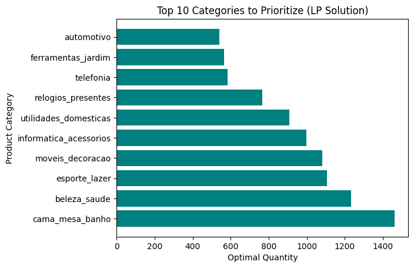

Product Prioritization
Maximizing Revenue via Linear Programming
1. Introduction
Olist is a leading e-commerce marketplace in Brazil connecting small businesses to customers. However, logistics networks have breaking points.
The Business Challenge
If Olist fills trucks with heavy, cheap items (like cement), they lose money. If they fill them with light, expensive items (like watches), they maximize profit. The challenge is finding the mathematical balance between volume, weight, and price.
Which product categories should Olist prioritize to maximize total revenue, given the strict constraints on historical handling capacity?
2. Methodology
To solve this, we apply the Simplex Method following this workflow:
01
Data Collection collect data from kaggle
02
Preprocessing Clean missing values, handle outliers, and merge datasets.
03
Modeling Formulate Objective Function (\(Z\)) and Constraints (\(C\)).
04
Optimization Use Python scipy.optimize ,linprog to solve for the optimal \(x\).
05
Results Interpret the optimized solution for strategy.
3. Data Overview
We utilized three core datasets from the Olist public database (2016–2018).
Dataset Timeline
We split dataset into 3 months
3 month
2016
Q1
Q2
Q3
Q4 2017
Q1
Q2
Q3
Q4 2018
Sales Data olist_order_items
| Attribute | Description |
|---|---|
order_id |
Unique identifier of the order. Used to group items. |
order_item_id |
Sequential number identifying the number of items included in the same order. |
product_id |
Unique identifier used to link the transaction to the product specifications. |
seller_id |
Unique identifier of the seller. |
shipping_limit_date |
The seller shipping limit date for handling the order. |
price |
The item price. |
freight_value |
Item freight cost (Shipping cost). |
Product Specs olist_products
| Attribute | Description |
|---|---|
product_category_name |
The category name used to aggregate demand and assign quantities. |
product_id |
Unique identifier of the product. |
product_name_lenght |
Number of characters extracted from the product name. |
product_description_lenght |
Number of characters extracted from the product description. |
product_photos_qty |
Number of product published photos. |
product_weight_g |
Product weight in grams. Total weight must not exceed warehouse limit. |
product_length_cm |
Product length in centimeters. |
product_height_cm |
Product height in centimeters. |
product_width_cm |
Product width in centimeters. |
Payments olist_order_payments
| Attribute | Description |
|---|---|
order_id |
Unique identifier of an order. Used for filtering valid sales. |
payment_sequential |
Sequence of the payments. |
payment_type |
Method of payment (credit card, voucher, boleto, debit card). |
payment_installments |
Number of installments chosen by the customer. |
payment_value |
Transaction value. Used to validate the total order revenue. |
4. Data Source Mapping
We formulated the problem using the following variables mapped from the Olist dataset:
Variable Mapping
| Component | Symbol | description | Calculation/Data source |
|---|---|---|---|
| Decision Variable | \(x_i\) | Quantity of item for category i | product_category_name |
| Objective coefficient | \(r_i\) | average revenue per unit for category i | \(r_i= \frac{\text{price in category i}}{\text{number item sold in category i}}\) |
| Constraint Parameter | \(D_i\) | Demand linit for category i | \(D_i= \frac{\text{total item sold in category i}}{total month}\) |
| Constraint Parameter | \(C_i\) | Total handing Capacity | \(C_i= \frac{\sum\text{total item sold}}{total month}\) |
5. Mathematical Formulation
We model this as a Resource Allocation Problem (Knapsack-style variant).
The Linear Program
- Objective Function
- Capacity Constraint
- Demand Constraints
- Non-Negativity
6. Results
